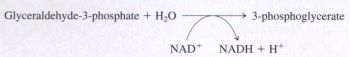
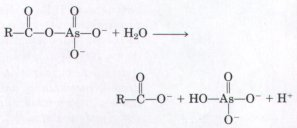
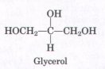
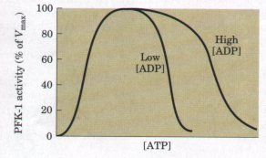

2 pyruvate + 2NADH + 2H+ + 2ATP + 2H2O
2 pyruvate + 2NADH + 2H+ + 2ATP + 2H2OGlycolysis is a universal metabolic pathway for the catabolism of glucose to pyruvate accompanied by the formation of ATP. The process is catalyzed by ten cytosolic enzymes, and all of the intermediates are phosphorylated compounds. In the preparatory phase of glycolysis, ATP is invested to convert glucose to the phosphorylated intermediate fructose1,6-bisphosphate, then the carbon-carbon bond between C-3 and C-4 is broken to yield two molecules of triose phosphate. In the payoff phase of glycolysis, each of the two molecules of glyceraldehyde-3-phosphate derived from glucose undergoes oxidation at C-1; the energy of this oxidation reaction is conserved in the formation of NADH and an acyl phosphate bond in 1,3-bisphosphoglycerate. This compound has a high phosphate group transfer potential, and in a substrate-level phosphorylation catalyzed by phosphoglycerate kinase the phosphate group is transferred to ADP, forming ATP and 3-phosphoglycerate. Rearrangement of the atoms in 3-phosphoglycerate with the loss of H2O gives rise to phosphoenolpyruvate, another compound with high phosphate group transfer potential. Phosphoenolpyruvate donates a phosphate group to ADP to form ATP in the second substratelevel phosphorylation; the other product of this reaction is pyruvate, the end product of the payoff phase of glycolysis. The overall equation for glycolysis is
1. Glucose + 2NAD+ + 2ADP + 2Pi
2 pyruvate + 2NADH + 2H+ + 2ATP + 2H2O
There is a net gain of two ATP.
The NADH formed in glycolysis must be recycled to regenerate NAD+, which is required as electron acceptor in the first step of the payoff phase of glycolysis. Under aerobic conditions, electrons pass from NADH to O2 through a chain of electron carriers in the process of mitochondrial respiration. Under anaerobic conditions, many organisms regenerate NAD+ by transferring electrons from NADH to pyruvate, forming lactate. This process occurs in vertebrate muscle during intense muscular activity, when energy demand outstrips the ability to deliver O2 to the muscles. Other organisms, such as yeast, regenerate NAD+ by reducing pyruvate to ethanol and CO2. In these anaerobic processes, called fermentations, no net oxidation or reduction of the carbons of glucose occurs. A variety of alcohols and organic acids are produced commercially by exploiting the ability of microorganisms to ferment glucose to these products.
Glycogen and starch, polymeric storage forms of glucose, enter glycolysis in a two-step process that begins with phosphorolytic cleavage of a glucose residue from an end of the polymer, forming glucose-1-phosphate. This is catalyzed by glycogen (or starch) phosphorylase. Phosphoglucomutase then converts glucose-1-phosphate to glucose-6-phosphate, the first intermediate in glycolysis. Ingested disaccharides are converted into monosaccharides in the animal intestine by specific hydrolytic enzymes on the outer surface of intestinal epithelial cells; the monosaccharides are then taken up and transported to the liver or other tissues.
A variety of D-hexoses, including fructose, mannose, and galactose, can be funneled into glycolysis. Each is first phosphorylated by a kinase that uses ATP as phosphate donor, then converted into either glucose-6-phosphate or fructose-6-phosphate (the second intermediate in glycolysis). The conversion of galactose-1-phosphate to glucose-1phosphate involves two intermediates that are nucleotide derivatives: UDP-galactose and UDPglucose. Genetic defects in the enzymes that catalyze conversion of galactose into glucose-1-phosphate result in galactosemia, a serious human disease.
In a metabolically active cell at steady state, intermediates are formed and consumed at equal rates. Of paramount importance to a cell is the maintenance of a high steady-state concentration of ATP. When some perturbation alters the rate of formation or consumption of an intermediate or product such as ATP, compensating changes in the activities of the relevant enzymes bring the system back into the steady state. These changes in enzyme activity are achieved by allosteric regulation or covalent modification (such as phosphorylation) of the enzymes, often triggered by hormonal signals.
In multistep processes such as glycolysis, certain of the enzyme-catalyzed reactions are essentially at equilibrium in the steady state; the rates of these reactions rise and fall with substrate concentration, and they are said to be substratelimited. Other reactions are out of equilibrium; their rates are too slow to produce instant equilibration of substrate and product, and these reactions are said to be enzyme-limited. The enzymelimited reactions in a multistep process are often highly exergonic and therefore practically irreversible, and the enzymes that catalyze these reactions are commonly the points at which flux through the pathway is regulated. In the glycolytic pathway from glycogen to pyruvate, the regulated steps include those catalyzed by glycogen phosphorylase, hexokinase, phosphofructokinase-1 (PFK-1), and pyruvate kinase; all are exergonic, enzyme-limited reactions.
Glycogen phosphorylase of vertebrate muscle is activated by phosphorylation at the Ser14 residue of each subunit, catalyzed by phosphorylase b kinase, which is itself activated by a cascade of regulatory events triggered by the hormone epinephrine. Inactivation of glycogen phosphorylase results from the action of a specific phosphatase that removes the phosphate groups from the Ser14 residues; this enzyme, too, is under hormonal regulation. The glycogen phosphorylase of liver is also regulated by phosphorylation and dephosphorylation, but the details of its regulation differ from those of the muscle enzyme, reflecting the difierent roles of muscle and liver in the metabolism of glucose. Liver serves as a buffer against changes in blood glucose concentrations; it releases glucose from stored glycogen when the hormone glucagon signals that blood glucose is too low. The dephosphorylation of the Ser14 residues in the liver enzyme is stimulated when glucose binds to an allosteric site on the phosphorylase. When intracellular glucose rises, signaling that there is suff`icient glucose in the blood, the glycogen phosphorylase is dephosphorylated and thus inactivated, slowing the mobilization of free glucose from liver glycogen.
Hexokinase is inhibited by high concentrations of its product, glucose-6-phosphate; thus, when the product of the reaction accumulates, its rate of production is lowered. Pyruvate kinase is likewise allosterically inhibited by one of its products, ATP.
Gluconeogenesis is a multistep process in which pyruvate is converted into glucose. Some of the enzymatic steps in gluconeogenesis are catalyzed by the same enzymes used in glycolysis; these are the substrate-limited reactions in both processes. The glycolytic reactions catalyzed by hexokinase, PFK-l, and pyruvate kinase are essentially irreversible. In gluconeogenesis, these three reactions are bypassed by reactions catalyzed by different enzymes. To prevent futile cycling-the simultaneous production and consumption of a cellular component (glucose in this case)-the enzyme-limited reactions of glycolysis and gluconeogenesis are subject to reciprocal allosteric control; when the glycolytic reactions are stimulated, the gluconeogenic reactions are inhibited, and vice versa. Fructose-2,6-bisphosphate is an allosteric activator of PFK-1 (glycolysis) and an allosteric inhibitor of fructose-1,6-bisphosphatase (gluconeogenesis). The hormone glucagon triggers a series of enzymatic changes that cause reduction of the level of the regulator fructose-2,6-bisphosphate. The result is a slowing of glycolysis and an increased rate of gluconeogenesis.
Glucose has catabolic fates other than glycolysis. The pentose phosphate pathway results in oxidation and decarboxylation at the C-1 position of glucose, producing NADPH and pentose phosphates; NADPH provides reducing power for biosynthetic reactions, and pentose phosphates are essential components of nucleotides and nucleic acids. Other oxidative pathways transform glucose into glucuronic acid and ascorbic acid (vitamin C). Glucuronidation converts certain nonpolar toxins into polar derivatives that can be excreted. Humans cannot synthesize ascorbic acid; the lack of this vitamin in the human diet leads to the disease scurvy.
General
Dennis, D.T. (1987) The Biochemistry of Energy Utilization in Plants, Chapman & Hall, New York.
A short, excellent presentation of energy-conserving reactions in higher plants, written at about the leuel of this textbook; it includes a uery good chapter (Chapter 6) on glycolysis and the pentose phosphate pathway.
Fruton, J.S. (1972) Molecules and Life: Historical Essays on the Interplay of Chemistry and Biology, Wiley-Interscience, New York.
This text includes a detailed historical account of research on glycolysis.
Hochachka, P.W. (1980) Living Without Oxygen: Closed and Open Systems in Hypoxia Tolerance, Harvard University Press, Cambridge, MA.
Comparative biochemistry and physiology of glycolysis in different organisms under anaerobic conditions.
Glycolysis
Phillips, D., Blake, C.C.F., & Watson, H.C. (eds) (1981) The Enzymes of Glycolysis: Structure, Activity and Evolution. Phil. Trans. R. Soc. Lond. (Biol.J 293, 1-214.
A collection of excellent reuiews on the enzymes of glycolysis, written at a level challenging but comprehensible to a beginning student of biochemistry.
Physiological Significance of Metabolite Channeling. (1991) J. Theoret. Biol. 152, 1-140.
A special issue containing a collection of 29 short papers on all aspects of metabolite channeling.
Srivastava, D.K. & Bernhard, S.A. (1987) Biophysical chemistry of metabolic reaction sequences in concentrated enzyme solution and in the cell. Annu. Rev. Biophys. Biophys. Chem. 16, 175-204.
A detailed consideration of the evidence for proteinprotein interactions and substrate channeling in concentrated protein solutions, with examples from the glycolytic pathway.
Regulation of Carbohydrate Metabolism
Barford, D., Hu, S.-H., & Johnson, L.N. (1991) Structural mechanism for glycogen phosphorylase control by phosphorylation and AMP. J. Mol. Biol. 218, 233-260.
Clear discussion of the regulatory changes in the structure of glycogen phosphorylase, based on the structures (from x-ray diffraction studies) of the active and inactiue forms of the enzyme.
Hue, L. & Rider, M.H. (1987) Role of fructose 2,6bisphosphate in the control of glycolysis in mammalian tissues. Biochem. J. 245, 313-324.
Ochs, R.S., Hanson, R.W., & Hall, J. (eds) (1985) Metabolic Regulation, Elsevier Science Publishing Co., Inc., New York.
A collection of short essays first published in Trends in Biochemical Sciences, better known as TIBS.
Pilkis, S.J. (ed) (1990) Fructose-2,6-bisphosphate, CRC Press, Inc., Boca Raton, FL.
An excellent collection of reuiews of the discovery of fructose-2,6-bisphosphate and its role in the regulation of carbohydrate metabolism in uertebrate animals, higher plants, and eukaryotic microbial organisms.
Pilkis, S.J., & Claus, T.H. (1991) Hepatic gluconeogenesis/glycolysis: regulation and structure/function relationships of substrate cycle enzymes. Annu. Reu. Nutr. 11, 465-515.
A review of the hormonal regulation of the enzymes of these pathways; advanced level.
Turner, J.F. & Turner, D.H. (1980) The regulation of glycolysis and the pentose phosphate pathway. In Biochemistry of Plants: A Comprehensiue Treatise (Stumpf, P.K. & Conn, E.E., eds), Vol. 2: Metabolism and Respiration (Davies, D.D., ed), pp. 279-316, Academic Press, New York.
Secondary Pathways of Glucose Oxidation Chayen, J.,
Howat, D.W., & Bitensky, L. (1986) Cellular biochemistry of glucose 6-phosphate and 6-phosphogluconate dehydrogenase activities. Cell Biochem. Funct. 4, 249-253.
Tephyl, T.R. & Burchell, B. (1990) UDPglucuronosyl transferases: a family of detoxifying enzymes. Ti-ends Pharmacol. Sci. 11, 276-279.
Wood, T. (1986) Physiological functions of the pentose phosphate pathway. Cell Biochem. Funct. 4, 241-247.
l. Equation for the Preparatory Phase of Glycolysis Write balanced equations for all of the reactions in the catabolism of D--glucose to two molecules of D-glyceraldehyde-3-phosphate (the preparatory phase of glycolysis). For each equation write the standard free-energy change. Then write the overall or net equation for the preparatory phase of glycolysis, including the net standard free-energy change.
2. The Payoff Phase of Glycolysis in Skeletal Muscle In working skeletal muscle under anaerobic conditions, glyceraldehyde-3-phosphate is converted into pyruvate (the payoff phase of glycolysis), and the pyruvate is reduced to lactate. Write balanced equations for all of the reactions in this process, with the standard free-energy change for each. Then write the overall or net equation for the payoff phase of glycolysis (with lactate as the end product), including the net standard free-energy change.
3. Pathway of Atoms in Fermentation A "pulsechase" experiment using 14C-labeled carbon sources is carried out on a yeast extract maintained under strictly anaerobic conditions to produce ethanol. The experiment consists of incubating a small amount of 14C-labeled substrate (the pulse) with the yeast extract just long enough for each intermediate in the pathway to become labeled. The label is then "chased" through the pathway by the addition of excess unlabeled glucose. The "chase" effectively prevents any further entry of labeled glucose into the pathway.
(a) If [l-14C] glucose (glucose labeled at C-1 with i4C) is used as a substrate, what is the location of 14C in the product ethanol? Explain.
(b) Where would 14C have to be located in the starting glucose molecule in order to assure that all the 14C activity were liberated as 14C02 during fermentation to ethanol? Explain.
4. Equiualence of Triose Phosphates 14C-Labeled glyceraldehyde-3-phosphate was added to a yeast extract. After a short time, fructose-1,6-bisphosphate labeled with 14C at C-3 and C-4 was isolated. What was the location of the 14C label in the starting glyceraldehyde-3-phosphate? Where did the second 14C label in fructose-1,6-bisphosphate come from? Explain.
5. Glycolysis Shortcut Suppose you discovered a mutant yeast whose glycolytic pathway was shorter because of the presence of a new enzyme catalyzing the reaction

Although this mutant enzyme shortens glycolysis by one step, how would it affect anaerobic ATP production? Aerobic ATP production?
6. Role of Lactate Dehydrogenase During strenuous activity, muscle tissue demands vast quantities of ATP compared with resting tissue. In rabbit leg muscle or turkey flight muscle, this ATP is produced almost exclusively by lactate fermentation. ATP is produced in the payoff phase of glycolysis by two enzymatic reactions, promoted by phosphoglycerate kinase and pyruvate kinase. Suppose skeletal muscle were devoid of lactate dehydrogenase. Could it carry out strenuous physical activity; that is, could it generate ATP at a high rate by glycolysis? Explain. Remember that the lactate dehydrogenase reaction does not involve ATP. A clear understanding of the answer to this question is essential for comprehension of the glycolytic pathway.
7. Free-Energy Change for Triose Phosphate Oxidation The oxidation of glyceraldehyde- 3-phosphate to 1,3-bisphosphoglycerate, catalyzed by glyceraldehyde- 3-phosphate dehydrogenase, proceeds with an unfavorable equilibrium constant (K'eq = 0.08; ΔG°' = +6.3 kJ/mol). Despite this unfavorable equilibrium, the flow through this point in the pathway proceeds smoothly. How does the cell overcome the unfavorable equilibrium?
8. Arsenate Poisoning Arsenate is structurally and chemically similar to phosphate (Pi), and many enzymes that require phosphate will also use arsenate. Organic compounds of arsenate are less stable than analogous phosphate compounds, however. For example, acyl arsenates decompose rapidly by hydrolysis in the absence of catalysts:

On the other hand, acyl phosphates, such as 1,3-bisphosphoglycerate, are more stable and are transformed in cells by enzymatic action.
(a) Predict the effect on the net reaction catalyzed by glyceraldehyde-3-phosphate dehydrogenase if phosphate were replaced by arsenate.
(b) What would be the consequence to an organism if arsenate were substituted for phosphate? Arsenate is very toxic to most organisms. Explain why.
9. Requirement for Phosphate in Alcohol Fermentation In 1906 Harden and Young carried out a series of classic studies on the fermentation of glucose to ethanol and CO2 by extracts of brewer's yeast and made the following observations.
(1) Inorganic phosphate was essential to fermentation; when
the supply of phosphate was exhausted, fermentation ceased before
all the glucose was used.
(2) During fermentation under these conditions, ethanol, CO2, and
a biphosphorylated hexose accumulated.
(3) When arsenate was substituted for phosphate, no
biphosphorylated hexose accumulated, but the fermentation
proceeded until all the glucose was converted into ethanol and
CO2.
(a) Why does fermentation cease when the supply of phosphate is exhausted?
(b) Why do ethanol and CO2 accumulate? Is the conversion of pyruvate into ethanol and CO2 essential? Why? Identify the biphosphorylated hexose that accumulates. Why does it accumulate?
(c) Why does the substitution of arsenate for phosphate prevent the accumulation of the biphosphorylated hexose yet allow the fermentation to ethanol and CO2 to go to completion? (See Problem 8.)
l0. Intracellular Concentration of Free Glucose The concentration of glucose in human blood plasma is maintained at about 5 mln. The concentration of free glucose inside muscle cells is much lower. Why is the concentration so low in the cell? What happens to the glucose upon entry into the cell?

11. Metabolism of Glycerol Glycerol (see below) obtained from the breakdown of fat is metabolized by being converted into dihydroxyacetone phosphate, an intermediate in glycolysis, in two enzyme-catalyzed reactions. Propose a reaction sequence for the metabolism of glycerol. On which known enzyme-catalyzed reactions is your proposal based? Write the net equation for the conversion of glycerol to pyruvate based on your scheme.12. Measurement of Intracellular Metabolite Concentrations
Measuring the concentrations of metabolic intermediates in the
living cell presents a difficult experimental problem. Because
cellular enzymes rapidly catalyze metabolic interconversions, a
common problem associated with perturbing the cell experimentally
is that the measured concentrations of metabolites reflect not
the physiological concentrations but the equilibrium
concentrations. Hence, a reliable experimental technique requires
all enzyme-catalyzed reactions to be instantaneously stopped in
the intact tissue, so that the metabolic intermediates do not
undergo
change. This objective is accomplished by rapidly compressing the
tissue between large aluminum plates cooled with liquid nitrogen
(-190°C), a process called freeze-clamping.
After freezing, which stops enzyme action instantly, the tissue
is powdered and the enzymes are inactivated by precipitation with
perchloric acid. The precipitate is removed by centrifugation,
and the clear supernatant extract is analyzed for metabolites. To
calculate the actual intracellular concentration of the
metabolite in the cell, the intracellular volume is determined
from the total water content of the tissue and a measurement of
the extracellular volume.
The actual intracellular concentrations of the substrates and products involved in the phosphorylation of fructose-6-phosphate by the enzyme phosphofructokinase-1 in isolated rat heart tissue are given in the table below.
Metabolite |
Apparent concentration (mM)* |
Fructose-6-phosphate |
0.087 |
Fructose-1,6-bisphosphate |
0.022 |
ATP |
11.42 |
ADP |
1.32 |
Source: From Williamson, J.R. (1965) Glycolytic control mechanisms I. Inhibition of glycolysis by acetate and pyruvate in the isolated, perfused rat heart. J. Biol. Chem. 240, 2308-2321.
*Calculated as wmol/mL of intracellular water.
(a) Using the information in the table, calculate the mass-action ratio, [fructose-1,6-bisphosphate][ADP]/[fructose-6-phosphate][ATP], for the phosphofructokinase-1 reaction under physiological conditions.
(b) Given that ΔG°' for the PFK-1 reaction is -14.2 kJ/mol, calculate the equilibrium constant for this reaction.
(c) Compare the values of the mass-action ratio and K'eq. Is the physiological reaction at equilibrium? Explain. What does this experiment say about the role of PFK-1 as a regulatory enzyme?
13. Pasteur Effect The regulated steps of glycolysis in intact cells are identified by studying the catabolism of glucose in whole tissues or organs. For example, the consumption of glucose by heart muscle can be measured by artificially circulating blood through an isolated intact heart and measuring the concentration of glucose before and after the blood passes through the heart. If the circulating blood is deoxygenated, heart muscle consumes glucose at a steady rate. When oxygen is added to the blood, the rate of glucose consumption drops dramatically, then continues at the new, lower rate. Why?

14. Regulation of Phosphofructokinase-1 The ef fect of ATP on the allosteric enzyme PFK-1 is shown below. For a given concentration of fructose6-phosphate, the PFK-1 activity increases with increasing concentrations of ATP, but a point is reached beyond which increasing concentrations of ATP cause inhibition of the enzyme.(a) Explain how ATP can be both a substrate and an inhibitor of PFK-1. How is the enzyme regulated by ATP?
(b) In what ways is glycolysis regulated by ATP levels?
(c) The inhibition of PFK-1 by ATP is diminished when the ADP concentration is high, as shown in the illustration above. How can this observation be explained?
15. Enzyme Actiuity and Physiological Function The Vmax of the enzyme glycogen phosphorylase from skeletal muscle is much larger than the Vmax of the same enzyme from liver tissue.
(a) What is the physiological function of glycogen phosphorylase in skeletal muscle? In liver tissue?
(b) Why does the Vmax of the muscle enzyme need to be larger than that of the liver enzyme?
16. Glycogen Phosphorylase Equilibrium Glycogen phosphorylase catalyzes the removal of glucose from glycogen. Given that ΔG°' for this reaction is 3.1 kJ/mol, calculate the ratio of [Pi] to [glucose-1-phosphate] when this reaction is at equilibrium. (Hint: The removal of glucose units from glycogen does not change the glycogen concentration.) The measured ratio of [Pi] to [glucose-1-phosphate] in muscle cells under physiological conditions is more than 100 to l. What does this indicate about the direction of metabolite flow through the glycogen phosphorylase reaction? Why are the equilibrium and physiological ratios different? What is the possible significance of this difference?
17. Regulation of Glycogen Phosphorylase In muscle tissue, the rate of conversion of glycogen to glucose-6-phosphate is determined by the ratio of phosphorylase a (active) to phosphorylase b (less active). Determine what happens to the rate of glycogen breakdown if a muscle preparation containing glycogen phosphorylase is treated with
(a) phosphorylase b kinase and ATP;
(b) phosphorylase a phosphatase;
(c) epinephrine.
18. Glycogen Breakdown in Rabbit Muscle The intracellular use of glucose and glycogen is tightly regulated at four points. In order to compare the regulation of glycolysis when oxygen is plentiful and when it is depleted, consider the utilization of glucose and glycogen by rabbit leg muscle in two physiological settings: a resting rabbit, whose legmuscle ATP demands are low, and a rabbit who has just sighted its mortal enemy, the coyote, and dashes into its burrow at full speed. For each setting, determine the relative levels (high, intermediate, or low) of AMP, ATP, citrate, and acetyl-CoA and how these levels affect the flow of metabolites through glycolysis by regulating specific enzymes. In periods of stress, rabbit leg muscle produces much of its ATP by anaerobic glycolysis (lactate fermentation) and very little by oxidation of acetylCoA derived from fat breakdown.
19. Glycogen Breakdown in Migrating Birds Unlike the rabbit with its short dash, migratory birds require energy for extended periods of time. For example, ducks generally fly several thousand miles during their annual migration. The flight muscles of migratory birds have a high oxidative capacity and obtain the necessary ATP through the oxidation of acetyl-CoA (obtained from fats) via the citric acid cycle. Compare the regulation of muscle glycolysis during short-term intense activity, as in the fleeing rabbit, and during extended activity, as in the migrating duck. Why must the regulation in these two settings be different?
20. Enzyme Defects in Carbohydrate Metabolism Summaries of four clinical case studies follow. For each case determine which enzyme is defective and designate the appropriate treatment, from the lists provided. Justify your choices. Answer the questions contained in each case study.
Case A The patient develops vomiting and diarrhea shortly after milk ingestion. A lactose tolerance test is administered. (The patient ingests a standard amount of lactose, and the blood-plasma glucose and galactose concentrations are measured at intervals. In normal individuals the levels increase to a maximum in about 1 h and then recede.) The patient's blood glucose and galactose concentrations do not rise but remain constant. Explain why the blood glucose and galactose increase and then decrease in normal individuals. Why do they fail to rise in the patient?
Case B The patient develops vomiting and diarrhea after ingestion of milk. His blood is found to have a low concentration of glucose but a much higher than normal concentration of reducing sugars. The urine gives a positive test for galactose. Why is the reducing-sugar concentration in the blood high? Why does galactose appear in the urine?
Case C The patient complains of painful muscle cramps when performing strenuous physical exercise but is otherwise normal. A muscle biopsy indicates that muscle glycogen concentration is much higher than in normal individuals. Why does glycogen accumulate?
Case D The patient is lethargic, her liver is enlarged, and a biopsy of the liver shows large amounts of excess glycogen. She also has a lower than normal level of blood glucose. Account for the low blood glucose concentration in this patient.
Defective Enzyme
(a) Muscle phosphofructokinase-1
(b) Phosphomannose isomerase
(c) Galactose-1-phosphate uridylyltransferase
(d) Liver glycogen phosphorylase
(e) Triose kinase
(f) Lactase in intestinal mucosa
(g) Maltase in intestinal mucosa
Treatment
l. Jogging 5 km each day
2. Fat-free diet
3. Low-lactose diet
4. Avoiding strenuous exercise
5. Large doses of niacin (the precursor of NAD+)
6. Frequent and regular feedings
21. Severity of Clinical Symptoms Due to Enzyme Deficiency The clinical symptoms of the two forms of galactosemia involving the deficiency of galactokinase and galactose-1-phosphate uridylyltransferase show radically different severity. Although both deficiencies produce gastric discomfort upon milk ingestion, the deficiency of the latter enzyme leads to liver, kidney, spleen, and brain dysfunction and eventual death. What products accumulate in the blood and tissues with each enzyme deficiency? Estimate the relative toxicities of these products from the above information.
22. Preparation of [γ-32P]ATP Highly radioactive ATP labeled with 32P in the γ position (terminal phosphate) is used extensively in metabolic studies. In one such procedure, investigators prepared [γ-32P]ATP by incubating the following components:
1 L 50 mM pH 8.0 buffer 10 mmol MgCl2
2 mmol reducing agent (to inhibit disulfide bond formation)
0.4 mmol 3-phosphoglycerate 0.05 mmol NAD+ (not NADH)
0.2 mmol ATP (not radioactive, free of ADP) 0.4 mg glyceraldyde-3-phosphate dehydrogenase
0.2 mg phosphoglycerate kinase
small amount of 32P-labeled sodium phosphate
After the mixture was incubated for 1 h, the ATP was recovered by chromatography. Almost all the 32p was found in the γ position of the ATP. How does this procedure work? Explain the role of all the components except the buffer and the reducing agent.